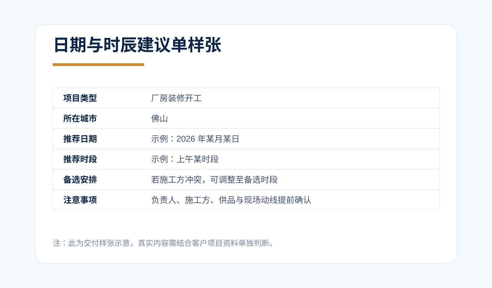
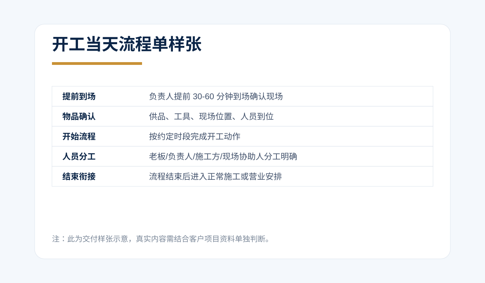
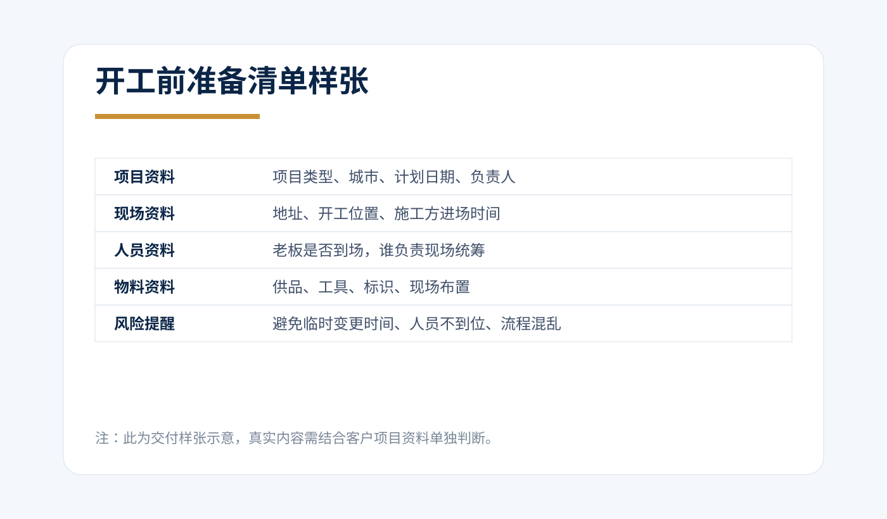

核心交付样张
建议放在首页、案例页、微信沟通和报价说明里使用。
日期与时辰建议单
解决客户最直接的问题：哪天、哪个时段、有什么注意事项。

开工当天流程单
解决执行问题：谁先到场、什么时候开始、谁负责什么、结束后怎么衔接。

开工前准备清单
解决准备问题：资料、人员、物料、现场、施工方是否都确认好。

人员分工建议
建议在正式 2980 完整方案中加入，让老板、负责人、施工方都有明确位置。
老板 / 负责人：最终确认与开工动作
现场负责人：提前到场、协调人员
施工方负责人：确认进场与施工衔接
协助人员：物品准备、现场整理、拍照记录
备注：若老板不能到场，应提前指定代表人。
不同价格档位的交付差异
| 服务档位 | 适合客户 | 交付重点 |
|---|---|---|
| 199 资料初审 | 不确定是否需要正式服务 | 判断项目类型、资料完整度、推荐服务档位 |
| 999 日期与时辰咨询 | 项目简单，只需要日期与时段 | 日期建议、时辰建议、基础注意事项 |
| 2980 完整流程方案 | 厂房、门店、办公室、工地等重要商业项目 | 日期、时辰、准备清单、供品建议、人员分工、当天流程、答疑 |
| 上门 / 年度顾问 | 大型项目、多项目、企业长期需求 | 现场指导、多节点安排、长期顾问 |